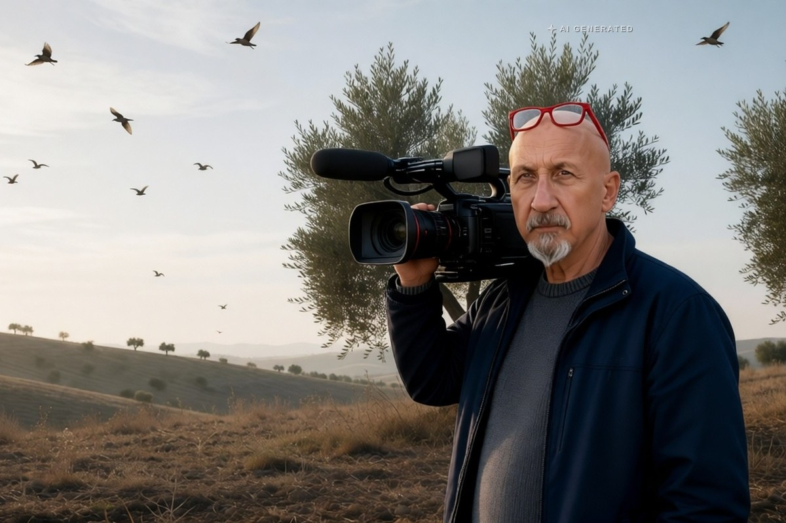

Sicilia · 31 ottobre 2026
Il Tar annulla il calendario venatorio: caccia ferma in tutta la Sicilia

Accolto il ricorso di due associazioni ambientaliste. Il calendario deve poggiare sul piano faunistico regionale, e l'ultimo valeva fino al 2018: andava rivisto ogni cinque anni e non è mai stato rifatto.
di Franco Zanghì
In Sicilia la stagione di caccia si è fermata. Non per una scelta della Regione, ma per una sentenza. E il motivo è un documento che andava rifatto da anni e che nessuno ha rifatto.
La decisione
La terza sezione del Tar di Palermo ha accolto il ricorso di due associazioni, Pro Natura e la Lega antivivisezionista, e ha annullato il provvedimento della Regione che fissava il calendario venatorio, cioè quando, dove e che cosa si può cacciare.
Il calendario venatorio è l'atto con cui ogni anno una Regione apre e chiude la stagione: fissa le date, le specie cacciabili, i numeri massimi, le giornate consentite. Non è un atto libero: deve poggiare su un documento tecnico che dica quanti animali ci sono su quel territorio, come si muovono e quanto prelievo possono sostenere. Quel documento è il piano faunistico, e senza di esso il calendario resta una decisione senza base.
Il ragionamento è questo: il calendario deve basarsi sul piano faunistico regionale, lo strumento che dice quanti animali ci sono e come proteggerli. L'ultimo piano, scrivono i ricorrenti, valeva dal 2013 al 2018. Andava rivisto ogni cinque anni. Non è mai stato rifatto.
La conseguenza, riportata da LiveSicilia, La Sicilia e dal Giornale di Sicilia, è lo stop immediato dell'attività venatoria in tutta la Sicilia. L'assessorato all'Agricoltura è stato condannato anche a pagare le spese del processo.
Annullare non è sospendere: quando un tribunale amministrativo annulla un provvedimento, quel provvedimento è come se non ci fosse mai stato, e viene meno l'atto che autorizzava l'attività. È la ragione per cui lo stop non riguarda una provincia o una specie, ma l'intera stagione in tutta la Regione.
Che cosa può succedere adesso
Gli avvocati delle associazioni parlano di legalità ripristinata e di tutela della biodiversità. La Regione, nelle fonti consultate, non ha ancora risposto: può ricorrere al Consiglio di giustizia amministrativa, ma per ora la sentenza vale.
Le domande sono due. Un piano scaduto da 8 anni: di chi è la responsabilità? E chi ha pagato la licenza e si era organizzato per la stagione, adesso con chi se la prende? Non è una questione di essere a favore o contro la caccia: è una questione di carte che la Regione doveva fare e non ha fatto.
Fonti
- LiveSicilia, «Caccia in Sicilia, il Tar annulla il calendario venatorio: stop all'attività», 30 ottobre 2026
- La Sicilia, «Tar Sicilia annulla il calendario venatorio: stop alla caccia in tutta l'isola», 30 ottobre 2026
- Giornale di Sicilia, «Il Tar Sicilia annulla il calendario venatorio, gli ambientalisti: stop alla stagione della caccia», 30 ottobre 2026
- Ragusa Oggi, «Caccia, il Tar annulla il calendario venatorio: stop in tutta la Sicilia», 30 ottobre 2026
La Regione non ha ancora comunicato se impugnerà la sentenza davanti al Consiglio di giustizia amministrativa.